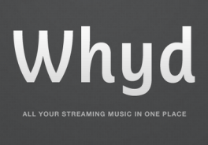
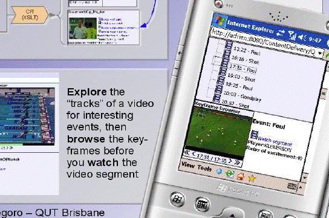
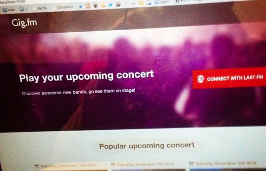
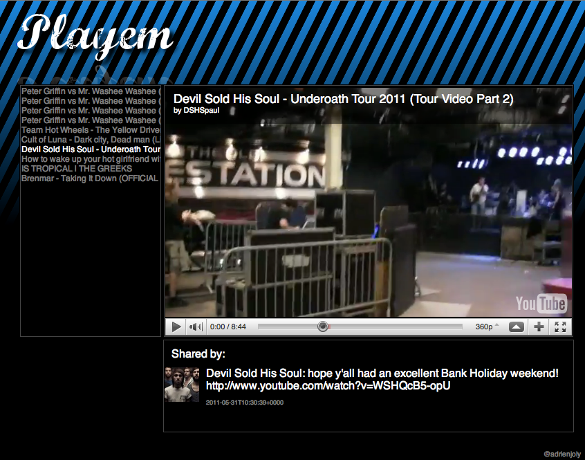

About me

Passionate programmer since the age of 7, I've become a pragmatic hacker who loves to prototype and build innovative ideas very efficiently (a.k.a. lean software development). Today, I'm developing Whyd, a place for music lovers to collect, stream and share their favorite tracks found on the web.
I've also been a drummer for about as long. Most of my bands are listed at the bottom of this page.
Main projects
-

whyd
My current full-time position: I'm the lead software engineer of whyd, an innovative service to keep, play and share tracks from various music streaming platforms.
-

fhacktory
After coordinating AngelHack Paris in 2013, I'm now organizing fhacktory hackathons, rewarding technical challenges rather than business ideas and boring slideshows.
-

PhD thesis(2010)
I researched how to improve collaboration between employees without reducing their productivity, by delivering relevant social updates based on their current work context.
-

Masters thesis(2006)
I developed a system that can optimize a web-based user interface for desktop and mobile displays, to browse semantically-indexed soccer matches.
Side projects
-

AlbumKeeperNEW!
Bookmark any album from the web, into your personal music collection. I coded this simple webapp in order to give Meteor a try, and I maintain it for my own use.
-
Google Hangout TimerNEW!
A simple stopwatch for Hangouts, that every participant can see. It was developed to improve productivity during our remote meetings, by granting a 2-minute speaking slot to every team member.
-

Playem JSNEW!
PlayemJS is a javascript component that manages a music/video track queue and plays a sequence of songs by embedding several players in a HTML DIV including Youtube, Soundcloud and Vimeo.
-

GigFm(2012)
Developped in 20 hours during AngelHack Paris 2012, GigFm allows you to play the best tracks of every upcoming concert recommended for you by Last.fm.
-

Whozzup(2011)
Whozzup brings locals together by making them engage to fun activities whenever they they have some free time.
This weekend project is still under development.
-
Hear I Am(2011)
Hear I Am recommends local music lovers with similar interests, whenever you check-in to a place or event.
This weekend project was awarded three prizes at Foursquare Hackathon.
-

Play'em(2011)
Developed in a week-end, Play'em plays videos that your friends shared on facebook, without having to browse, just like TV.
Play'em was featured on TV and on video podcast Tekzilla
-

Proximate(2005)
Proximate is a communication framework for ad-hoc wifi networks. Designed for mobile devices, it empowers applications sharing common network and user identification layers.
Also check out Pocket Outlook Export (2006).
-

Dr. Mario for TI-92+(2002)
A port of the famous Nintendo game for the TI-92+ calculator, developed in C, featuring smooth grayscale animations.
Also check out my first TI-92 game, Frogger.
My bands
-

Man Is Not A Bird
Instrumental band between post-rock and math-rock. Forming drummer until summer 2014.
-

Alastra
A powerful blend of hardcore and electronic music, inspired from science fiction themes.
-

Anthony Bui
More than ten years later, I performed live with my first guitarist (now pop-rock composer) and friend, Anthony Bui.
-

Trapped by Stereo
[RIP] A dual-singer post-hardcore band fueled by complex composition structures and effective melodies.
-

Anyone Cares
Melodic hardcore band which delivered several records and gigs, including with Strike Anywhere in 2006.
-

Cryoplasma (ex-Enema)
A mixture of rock and metal music, packed with energy and melodies.
-

Other bands
Also performed with several bands since 1997: Cryoplasma/Enema, Oddity, Low Sound, Nemesis...